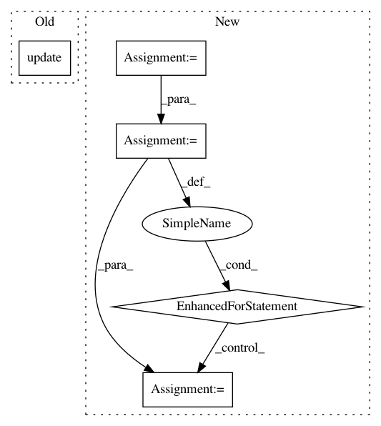

e6bbf54046cf4567e88cb130300b6b78ec88cb27,test_imagenet.py,,validate,#,95
Before Change
// measure accuracy and record loss
prec1, prec5 = accuracy(output.data, target, topk=(1, 5))
losses.update(loss.data[0], input.size(0))
top1.update(prec1[0], input.size(0))
top5.update(prec5[0], input.size(0))
// measure elapsed time
batch_time.update(time.time() - end)
After Change
// measure accuracy and record loss
prec1, prec5 = accuracy_sum(output.data, target, topk=(1, 5))
loss *= target.shape[0]
count = target.new_tensor([target.shape[0]],dtype=torch.long)
if dist.is_initialized():
dist.all_reduce(count, dist.reduce_op.SUM)
for meter,val in (losses,loss), (top1,prec1), (top5,prec5):
if dist.is_initialized():
dist.all_reduce(val, dist.reduce_op.SUM)
val /= count.item()
meter.update(val.item(), count.item())
// measure elapsed time
batch_time.update(time.time() - end)
end = time.time()
if i % args.print_freq == 0:
In pattern: SUPERPATTERN
Frequency: 3
Non-data size: 5
Instances
Project Name: mapillary/inplace_abn
Commit Name: e6bbf54046cf4567e88cb130300b6b78ec88cb27
Time: 2018-11-28
Author: samuel@mapillary.com
File Name: test_imagenet.py
Class Name:
Method Name: validate
Project Name: scikit-image/scikit-image
Commit Name: f8d9a6c144ef84bad2478a4ba4eedb1c559274e0
Time: 2020-11-11
Author: rfezzani@gmail.com
File Name: skimage/_shared/coord.py
Class Name:
Method Name: ensure_spacing
Project Name: jazzband/django-debug-toolbar
Commit Name: 908b49cb7d2d527b701996f0d0b9e1e19e765819
Time: 2013-11-24
Author: aymeric.augustin@m4x.org
File Name: debug_toolbar/settings.py
Class Name:
Method Name: